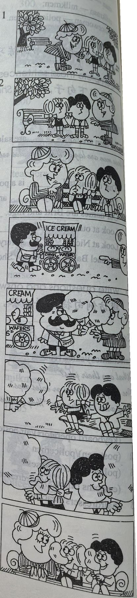

Lesson content · 课文
Lesson 19: Tired and thirsty · 又累又渴
Listen then answer this question. 听录音，然后回答问题。
Why do the children thank their mother?
为什么孩子们向母亲致谢？
MOTHER: What’s the matter, children?
GIRL: We’re tired …
BOY: … and thirsty, Mum.
MOTHER: Sit down here.
MOTHER: Are you all right now?
BOY: No, we aren’t.
MOTHER: Look! There’s an ice cream man.
MOTHER: Two ice creams please.
MOTHER: Here you are, children.
CHILDREN: Thanks, Mum.
GIRL: These ice creams are nice.
MOTHER: Are you all right now?
CHILDREN: Yes, we are, thank you!

New words and expressions · 生词和短语
| Word · 单词 | Pronunciation · 音标 | Meaning · 词义 |
|---|---|---|
| matter | /ˈmætə/ | n. 事情 |
| children | /ˈtʃɪldrən/ | n. 孩子们（child 的复数） |
| tired | /ˈtaɪəd/ | adj. 累的，疲乏的 |
| boy | /bɔɪ/ | n. 男孩 |
| thirsty | /ˈθɜːsti/ | adj. 渴的 |
| mum | /mʌm/ | n. 妈妈 |
| sit down | /sɪt daʊn/ | 坐下 |
| right | /raɪt/ | adj. 好，可以 |
| ice cream | /ˌaɪs ˈkriːm/ | 冰淇淋 |
Notes on the text · 课文注释
- What’s the matter? = Tell me what’s wrong. 怎么啦？
- There’s = There is.
Chinese translation · 参考译文
母亲：怎么啦，孩子们？
女孩：我们累了……
男孩：……口也渴，妈妈。
母亲：坐在这儿吧。
母亲：你们现在好些了吗？
男孩：不，还没有。
母亲：瞧！有个卖冰淇淋的。
母亲：请拿两份冰淇淋。
母亲：拿着，孩子们。
孩子们：谢谢，妈妈。
女孩：这些冰淇淋真好吃。
母亲：你们现在好了吗？
孩子们：是的，现在好了，谢谢您！
Practice · 课文练习
Understand the lesson · 课文理解
Comprehension · 理解题
Answer the question about the lesson text. 根据课文回答问题。
-
comprehension: Comprehension · 理解题 — Why do the children thank their mother?
Practice worksheet · 配套练习
A. Dialogue
Read this dialogue. Fill in the missing words. 填空。
-
worksheet: A. Dialogue — Mother: What’s the ____, Susan?
Susan: ____ tired.
Mike: And ____ thirsty, Mum.
Mother: I’m tired ____ thirsty, ____. Look! There’s ____ ice cream ____. There. Two ice ____. Are you all right now?
Children: Yes, thanks, Mum. These ice creams ____ very ____.
B. Vocabulary — opposites
Write the opposite. Choose: dirty, old, fat, heavy, shut, short, lazy, small, cold. 模仿例句完成以下练习。
Example · 例句
tall — short
-
worksheet: B. Vocabulary — opposites — hard-working
-
worksheet: B. Vocabulary — opposites — hot
-
worksheet: B. Vocabulary — opposites — clean
-
worksheet: B. Vocabulary — opposites — thin
-
worksheet: B. Vocabulary — opposites — light
-
worksheet: B. Vocabulary — opposites — open
-
worksheet: B. Vocabulary — opposites — young
-
worksheet: B. Vocabulary — opposites — big
B. Vocabulary — questions
Write the question, a negative answer, and a statement using the opposite adjective. 模仿例句完成以下练习。
Example · 例句
Is he tall? — No, he isn’t tall. He’s short.
-
worksheet: B. Vocabulary — questions — she / lazy?
-
worksheet: B. Vocabulary — questions — they / clean?
-
worksheet: B. Vocabulary — questions — the house / cold?
-
worksheet: B. Vocabulary — questions — the shop / open?
-
worksheet: B. Vocabulary — questions — the cases / light?
-
worksheet: B. Vocabulary — questions — she / young?
-
worksheet: B. Vocabulary — questions — her shoes / big?
Grammar practice · 语法练习
I. Ask and answer questions using the cues given according to the examples
Examples: you/thirsty/no -> Are you thirsty? No, we aren't thirsty. they/all right/yes -> Are they all right? Yes, they are.
you/tired/yesthey/Norwegian/noyou/busy/noyou/Dutch/yesthe boys/tall/yesthese trousers/long/yesthe teachers/young/nothe shops/big/noher shoes/dirty/yesyour hands/clean/yesyour parents/well/yesthe cases/heavy/no
II. Make sentences, using There is a/an ... according to the example
Example: postman -> Look. There's a postman.
air hostesspolicemanAmerican carVolvoice cream mannew MercedesCustoms officerold Fordopen shop
III. Translate the following sentences into English
- 请把我的大衣和帽子拿给我。
- 请出示你们的护照。
- 请出示你们的票。
- 请拿三份冰淇淋。
- 请坐下。
- 来见见我的朋友。
- 到楼上来看看吧。
- 请看那张图片。
IV. Answer the questions about yourself
- What's your name?
- What nationality are you?
- Are you old or young?
- Are your parents old?
- Are they busy?
- What are your father's and mother's jobs?
- How are you and your parents?
- Are the boys and girls in your class tall or short?
- Are they thin or fat?
- Are your teachers young or old?
Your notes and answers
Use this space for longer responses or exercises that do not have an individual answer box.